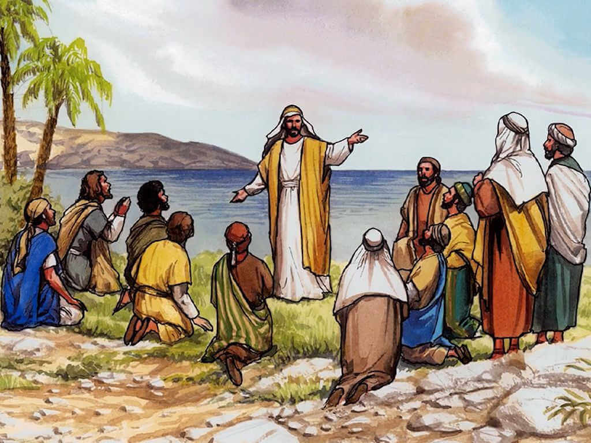

1.4. Apa rencana Allah pada hari ini?
Ayat Renungan
Sekarang kita boleh yakin bahwa bagi kita semua yang mengasihi Dia, Allah selalu mengatur semua hal yang kita alami dan hadapi, supaya hal-hal itu menghasilkan kebaikan. Karena kita adalah orang-orang yang sudah dipilih-Nya sesuai dengan rencana-Nya. Karena sejak semula Allah sudah mengenal dan mengasihi kita, dan Dia berencana supaya kita menjadi serupa dengan Anak-Nya. Dan rencana-Nya juga supaya Yesus menjadi Anak sulung di antara banyak saudara-saudari. Rm. 8:28-29
Pekerjaan itu harus terus berlangsung supaya kita semua semakin erat bersatu di dalam keyakinan dan pengetahuan kita tentang Anak Allah. Hendaklah kita semakin dewasa secara rohani, dan terus bertumbuh menjadi seperti Kristus. Ef. 4:13
Marilah mengambil waktu merenungkan ayat-ayat di atas..
- Siapa saja anggota keluarga Allah? Siapa yang memperanakkan mereka?
- Berapa keluarga yang dimiliki Allah? Apa itu artinya?
- Berapa anak yang ada dalam keluarga itu? Apa yang Allah inginkan?
- Seperti apa sifat-sifat anak-anak itu? Seperti siapa rupa dan gambar mereka?
- Bagaimana kita dapat menjadi bagian dari keluarga Allah?
Bacaan Renungan
Apa rencana Allah pada hari ini?
Sekarang kita boleh yakin bahwa bagi kita semua yang mengasihi Dia, Allah selalu mengatur semua hal yang kita alami dan hadapi, supaya hal-hal itu menghasilkan kebaikan. Karena kita adalah orang-orang yang sudah dipilih-Nya sesuai dengan rencana-Nya. Karena sejak semula Allah sudah mengenal dan mengasihi kita, dan Dia berencana supaya kita menjadi serupa dengan Anak-Nya. Dan rencana-Nya juga supaya Yesus menjadi Anak sulung di antara banyak saudara-saudari. Rm. 8:28-29
Bagaimana kita dapat meringkaskan rencana Allah pada hari ini?
Perikop di atas menunjukkan kepada kita dengan begitu jelas rencana Allah. Kita dapat meringkaskannya begini: Sebuah keluarga yang terdiri dari banyak anak menurut rupa dan gambar Yesus.
❝ Allah menghendaki sebuah keluarga yang terdiri dari banyak anak menurut rupa dan gambar Yesus. ❞
Mari kita melihatnya dengan lebih rinci:
Sebuah keluarga: Hal ini menegaskan mengenai kesatuan. Yaitu syarat mendasar pemenuhan rencana Allah. Walaupun kebersatuan tidak ditekankan dalam perikop di atas, kita tahu bahwa anak-anak yang serupa dan segambar dengan Yesus tidak bisa berupa seorang yang suka bertengkar, tukang adu domba, dan keras kepala. Kesatuan keluarga Allah sangat ditekankan dalam ayat-ayat seperti berikut: Yoh. 17:20-22; 2Kor. 1:10-12; 3:1-4; 10:16-17; Ef. 2:14-16; 3:15; 4:1-6; 4:12-16; Flp. 1:27; 2:1-4; dan masih banyak lagi.
Terdiri dari banyak anak: Hal ini menegaskan mengenai kuantitas. Murid memuridkan murid, yang mampu memuridkan orang lain, dst… (Mat. 28:18-20). Di mana ada kehidupan secara alami selalu ada reproduksi. Kehidupan rohani juga seharusnya demikian. Orang yang memiliki kehidupan Kristus berbuah dan menanam hidup itu di dalam orang lain. Ada pemikiran aneh yang tidak masuk akal, yang mengatakan: “kita sedikit tapi berkualitas”. Nah, jika kita berkualitas pasti kita tidak akan tetap sedikit, karena yang memiliki kehidupan Kristus menghasilkan murid dan melipatgandakan. Allah menginginkan banyak anak.
Serupa dengan Yesus: Hal ini menegaskan mengenai pembentukan karakter. Allah tidak puas dengan kuantitas, tidak puas dengan jumlah saja. Anak-anak-Nya harus memiliki karakter Kristus dalam hidupnya, yaitu dengan berjalan sama seperti Yesus telah berjalan, hidup sama seperti Yesus.
Pekerjaan itu harus terus berlangsung supaya kita semua semakin erat bersatu di dalam keyakinan dan pengetahuan kita tentang Anak Allah. Hendaklah kita semakin dewasa secara rohani, dan terus bertumbuh menjadi seperti Kristus. Ef. 4:13
Apa peran kita di dalam rencana Allah?
Ketika kita memahami dan menaati rencana Allah, rencana-Nya itu menjadi panggilan dan vokasi kita (2Tim. 1:8-9; Rm. 8:28-29). Secara sederhana, vokasi dan panggilan kita adalah untuk berpartisipasi sebagai pelayan demi penggenapan rencana Allah.
❝ Ketika kita memahami dan menaati rencana Allah, rencana-Nya itu menjadi panggilan dan vokasi kita. ❞
Oh! Kiranya Allah menerangi mata hati kita untuk memahami pengharapan apa yang ada dalam panggilan ini (Ef. 1:18), supaya rencana agung Allah itu menjadi lebih dari sekedar artikel atau pelajaran bagi kita. Orang yang menerima rencana Allah di dalam hatinya, memahami panggilannya dan terikat dengan vokasi kudus ini (Flp. 3:12-14). Kita harus hidup sesuai vokasi kita ini (Ef. 4:1-3) dan berusaha untuk meneguhkannya (2Ptr. 1:10).
Katekese
Apa rencana Allah pada hari ini?
Allah menghendaki sebuah keluarga yang terdiri dari banyak anak menurut rupa dan gambar Yesus.
Sekarang kita boleh yakin bahwa bagi kita semua yang mengasihi Dia, Allah selalu mengatur semua hal yang kita alami dan hadapi, supaya hal-hal itu menghasilkan kebaikan. Karena kita adalah orang-orang yang sudah dipilih-Nya sesuai dengan rencana-Nya. Karena sejak semula Allah sudah mengenal dan mengasihi kita, dan Dia berencana supaya kita menjadi serupa dengan Anak-Nya. Dan rencana-Nya juga supaya Yesus menjadi Anak sulung di antara banyak saudara-saudari. Rm. 8:28-29
Kenapa sebuah keluarga?
Karena Allah menginginkan kesatuan.
Pekerjaan itu harus terus berlangsung supaya kita semua semakin erat bersatu di dalam keyakinan dan pengetahuan kita tentang Anak Allah. Hendaklah kita semakin dewasa secara rohani, dan terus bertumbuh menjadi seperti Kristus. Ef. 4:13
Kenapa banyak anak?
Karena Allah menginginkan kuantitas.
Kenapa menurut rupa dan gambar Kristus?
Karena Allah menginginkan kualitas.
Kembali